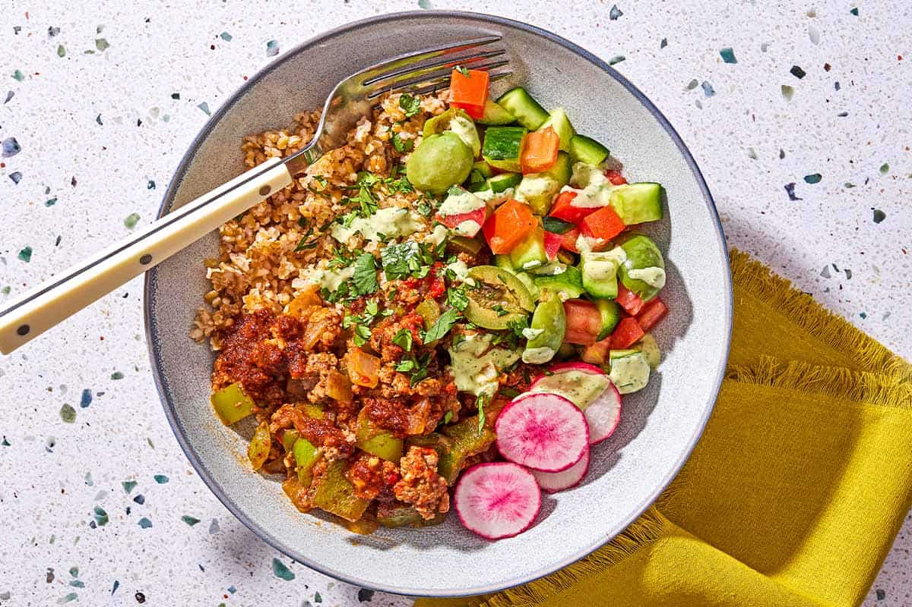

Mediterranean Beef Bowl

Baharat-spiced ground beef over hearty grains with fresh veggies, herbs, olives, and a quick harissa oil.
2 tbspextra virgin olive oil2 tbspharissa paste1 tspAleppo pepper flakes¼ cupextra virgin olive oil1large yellow onion, finely chopped3large garlic cloves, finely chopped1large green bell pepper, diced- kosher salt
- freshly ground black pepper
3 tbsptomato paste¼ cupwater1½ lbslean ground beef1½ tspbaharat½ tspsmoked Spanish paprika3Roma tomatoes, diced3Persian cucumbers, diced- kosher salt
- extra virgin olive oil
3radishes, sliced½ cupchopped fresh cilantro or parsley- Castelvetrano or kalamata olives, pitted
2 cupscooked whole grains (bulgur, farro, barley, or brown rice), warmed- tahini sauce or creamy feta dressing
Prepare the harissa oil (optional). In a small skillet, warm the extra virgin olive oil over medium heat. Add the harissa paste and Aleppo pepper flakes and stir to combine. Set aside to cool.
Cook the vegetables. In a large nonstick pan, heat extra virgin olive oil over medium-high heat. When the oil is shimmering, add the onion, garlic, and bell pepper. Season with a big pinch each of kosher salt and black pepper. Cook, stirring regularly, until the vegetables are fragrant and softened, about 5 minutes. Stir in the tomato paste and water.
Cook the ground beef. Add the ground beef and season with another pinch of salt. Break up the beef and cook, stirring regularly, until browned, about 5 to 7 minutes. If using fatty beef, drain excess fat before proceeding. Add the baharat and smoked paprika. Cook a few more minutes, until the meat is fully browned and no longer pink. Taste and adjust seasoning. Remove from heat.
Prepare the toppings. Toss the diced tomato and cucumber with a pinch of salt and a drizzle of extra virgin olive oil.
Assemble and serve. Divide the grains equally among your serving bowls and top each with the ground beef. Drizzle on a bit of the harissa oil if using, followed by tahini or feta dressing. Top with the vegetables, herbs, radishes, and olives. Serve with any remaining sauces, veggies, and olives in small bowls on the side.